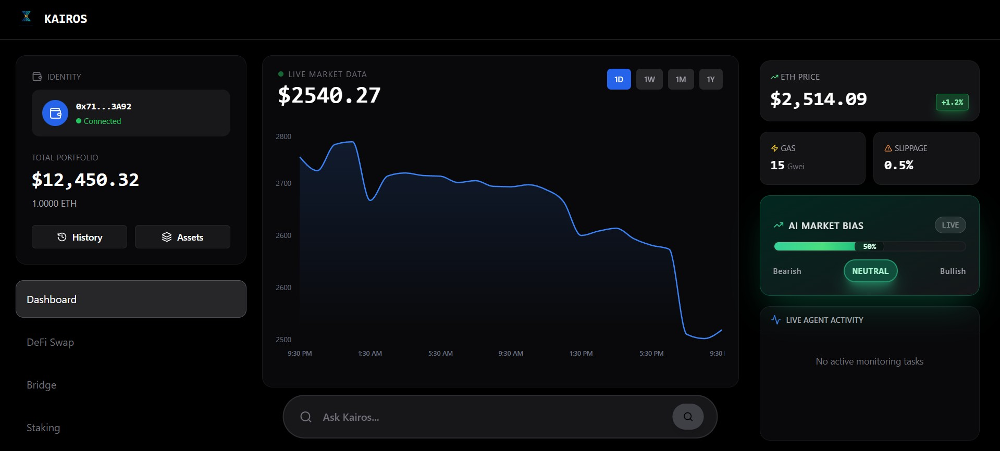

← Go Back
Kairos: AI-Powered DeFi Trading Platform
AI Trading Assistant
- Natural Language Processing: The AI assistant uses Hugging Face's language models to parse user queries and extract trading intent (buy, sell, monitor, analyze). Users can ask questions like "Should I buy ETH now?" and receive structured analysis with market context.
- Sentiment Analysis: The system fetches real-time news headlines related to crypto assets using NewsAPI and analyzes sentiment using VADER (Valence Aware Dictionary and sEntiment Reasoner). This generates a bullish/bearish/neutral score (0-100) that drives the AI Market Bias indicator.
- Multi-Category Intelligence: The AI categorizes queries into TRADE, SENTIMENT, SECURITY, or PREDICT actions. For security queries, it analyzes wallet addresses and transaction patterns. For predictions, it combines technical indicators with news sentiment to forecast short-term price movements.
- Contextual Recommendations: Based on the parsed intent and live market data, the AI provides gas-optimized recommendations, suggesting optimal times to execute trades when network fees are lower.
